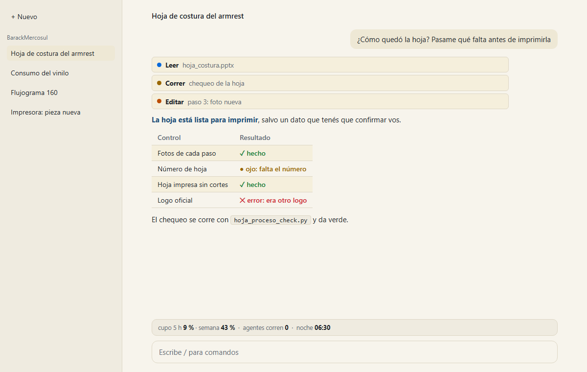
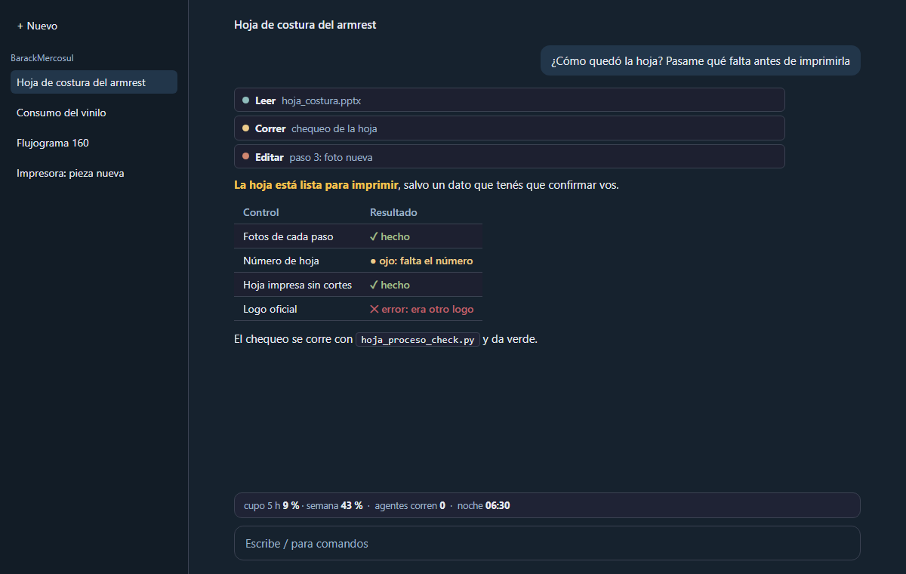
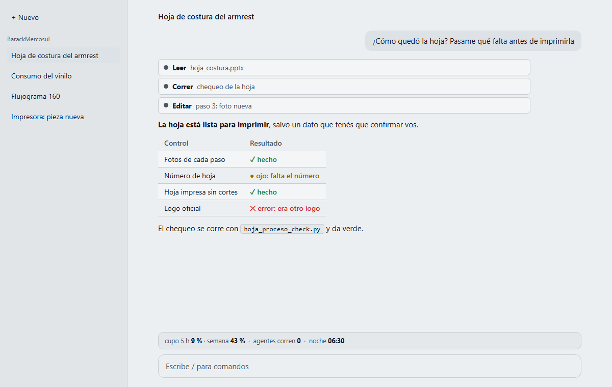
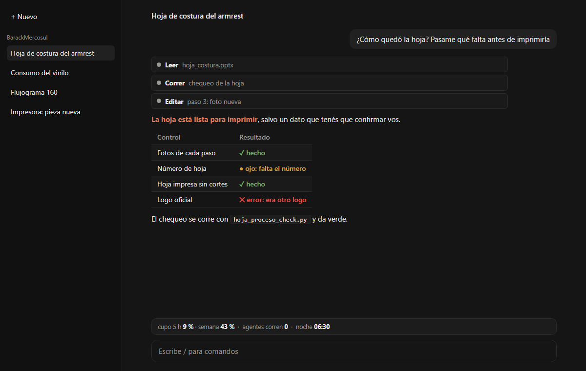

Cómo se vería el chat: tres opciones para elegir
Son maquetas, no capturas: la conversación es de ejemplo y no se instaló nada. Elegí una, o ninguna.
/theme en una conversación para ver si la app
lo acepta. No lo pude ver desde acá: para sacar una captura del tema claro había que cambiarte la configuración.
Un skin (un mod de la comunidad) repinta los mensajes, las tablas y las filas de herramientas; el fondo de la ventana
lo pone la app y la letra no la cambia ningún mod.Papel · claro, fondo hueso


Parecido a una hoja impresa: para leer mucho rato. Es lo contrario del oscuro de hoy.
De dónde salen los colores: Tema CLARO de la app + skin «github» (texto, íconos y semáforo, variante clara) con las cajas del skin «solarized» claro (#eee8d5). El fondo hueso #f7f4ec y el azul #1f4e79 son la propuesta del informe de la comunidad del 15/10 (afuera_comunidad_mods.md, en la nube de Ingeniería): ningún skin pinta el fondo de la ventana.
Para probarlo en vivo (después de instalar el skin, con tu sí): /skin github (o /skin solarized) con la app en tema claro
| Contraste (mínimo 4,5) | |
|---|---|
| texto sobre el fondo | 14,4 |
| texto dentro de tu mensaje | 12,9 |
| texto gris (secundario) | 4,8 |
| verde «hecho» | 4,6 |
| ámbar «ojo» | 4,4 |
| rojo «error» | 4,9 |
Lo que sale en rojo queda apenas debajo del mínimo para letra chica: en negrita se lee, pero si elegís esta opción ese color se ajusta un tono antes de usarla.
Azul noche · oscuro suave, sin marrón


Sigue siendo oscuro, pero azul y no negro-marrón: cansa menos a la noche.
De dónde salen los colores: Tema OSCURO de la app + skin «nord» (texto, íconos y semáforo) con el código en las cajas de «tokyo-night» (#1f2335). El fondo #16222e, el gris secundario #9fb3c8, la caja de Fak #22364a y el ámbar #f2c14e son la propuesta del informe de la comunidad del 15/10.
Para probarlo en vivo (después de instalar el skin, con tu sí): /skin nord (o /skin tokyo-night) con la app en tema oscuro
| Contraste (mínimo 4,5) | |
|---|---|
| texto sobre el fondo | 13,2 |
| texto dentro de tu mensaje | 10,2 |
| texto gris (secundario) | 7,5 |
| verde «hecho» | 7,9 |
| ámbar «ojo» | 10,3 |
| rojo «error» | 3,9 |
Lo que sale en rojo queda apenas debajo del mínimo para letra chica: en negrita se lee, pero si elegís esta opción ese color se ajusta un tono antes de usarla.
Plano de planta · gris claro con semáforo


Gris de plano, sin colores de adorno: verde = hecho, ámbar = ojo, rojo = error. Sale bien en una captura para un informe.
De dónde salen los colores: La idea del skin «mono» (solo grises) llevada a claro: «mono» trae únicamente variante oscura. El fondo #eceff1 y el texto #111827 son la propuesta del informe de la comunidad del 15/10; los demás grises son una elección de esta maqueta. El semáforo sale del skin «github» claro (#1a7f37, #9a6700, #cf222e).
Para probarlo en vivo (después de instalar el skin, con tu sí): /skin mono (no se verificó cómo se ve en tema claro: trae solo la variante oscura)
| Contraste (mínimo 4,5) | |
|---|---|
| texto sobre el fondo | 15,4 |
| texto dentro de tu mensaje | 13,6 |
| texto gris (secundario) | 6,5 |
| verde «hecho» | 4,4 |
| ámbar «ojo» | 4,2 |
| rojo «error» | 4,6 |
Lo que sale en rojo queda apenas debajo del mínimo para letra chica: en negrita se lee, pero si elegís esta opción ese color se ajusta un tono antes de usarla.
Para comparar: así es hoy

Reconstrucción con los colores medidos en la ventana de la app el 17/10/2026 (fondo del chat #151515, barra lateral #111111, cajas #212121). No es una captura: la conversación es la misma de ejemplo.